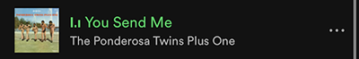

Take a Scroll Though my Phone!
I use my celluar device to connect with friends and family, share art, music, and snippets of my life with the digital world :0
Social media can be straining to one's mental health. To avoid negitive feelings of internet poison, I try to fill my social media feeds with friends, art, and fun facts!
This was a cold day and I was wearing my new clogs.. had to document it!
This is one of my favrite Instagram pages that posts cool pieces of furnature from FaceBook Marketplace.
.jpg)
My favorite thing about my phone is the camera! I love to capture pictures of things that make me smile (or squirm)
"Do you have games on your phone?"
Yes I do. It's sudoku.

I love my friends and I love to show it!

I also use my phone to keep in touch with others, obviously. Here are some recent highlights!


I often use my phone to ask my mom to send pictures of my lovely dog, wesley.
Spotify is easily my favorite app on my phone. Here are a few songs i've had on repeat lately.


